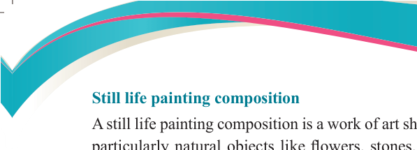
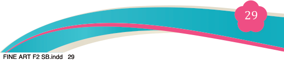
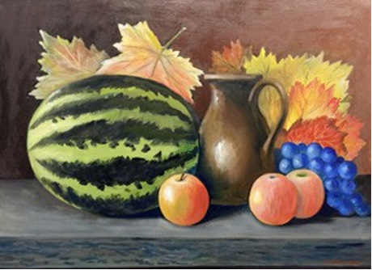

Fine Art for Secondary Schools

29


Student’s Book Form Two
Still life painting composition

A still life painting composition is a work of art showing an arrangement of objects
particularly natural objects like flowers, stones, animal shells, dead animals or man-made objects like glasses, pots, knives, and plates. Still life painting has been a popular artistic venture for centuries. Painting a still life through direct
observation is an important skill for artists to compose a proper still life. No matter
how skilful an artist may be, a weak composition will hold their painting back. An
artist should be careful in choosing objects of different sizes and should arrange them in a way that breaks up any excessive patterns.
Colour is another important part of a well composed still life painting. Thus, it should be carefully chosen for still life painting. Certain colour combinations are pleasing to the eye depending on where they fall on a basic colour wheel. See
Figure 2.13.

Figure 2.13: A pleasing still life painting composition
Procedures for composing still life painting
The following are basic steps to follow in order to achieve a pleasing and appealing
still life painting.
Step 1: Make preliminary sketches of what you are observing.
This includes keeping the composition in check with proportions, lines, shape and
space. It is good to check for these elements among the objects and within the objects
themselves. You can opt to employ a ‘sight size’ technique to maintain proportions
04/08/2025 13:54